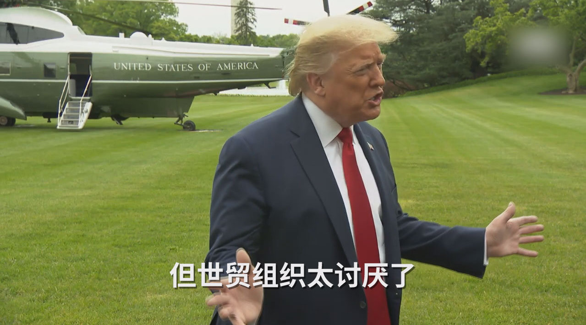
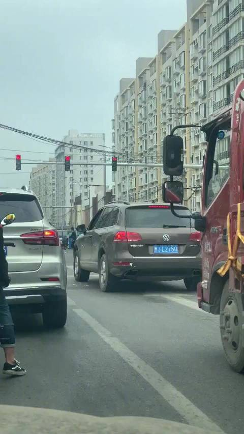
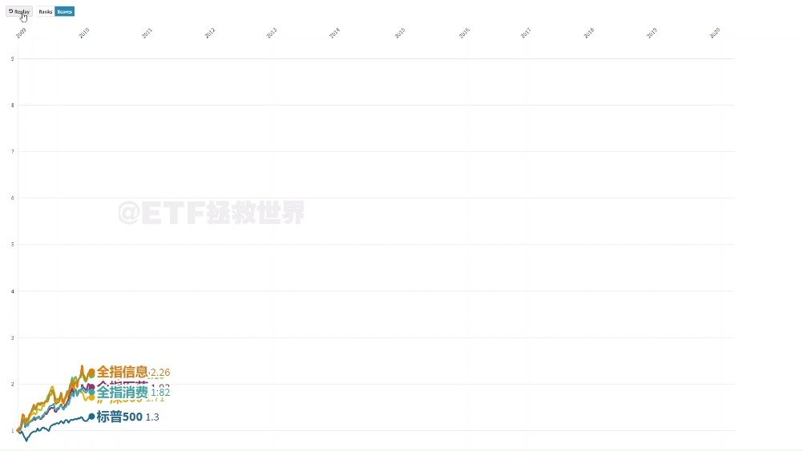

历史新高。做为股东和忠实消费者，很满意。//@ETF拯救世界:谁能想到一年多过去，京东马上新高了。@ETF拯救世界:为了让大家了解炒股的风险，一觉醒来京东已经巨亏几百美元。怎么办。今天早餐只能喝自来水了。炒股害死人，不要炒股。血淋淋的教训。众筹今天的午饭，一会发支付宝账号。
人均GDP只有你1/6，不是发展中国家是什么。@观察者网:【特朗普谈WTO总干事离职：我OK啊 他总偏袒中国】14日，世界贸易组织总干事阿泽维多宣布将于8月31日正式离任，提前一年结束任期。早已对世贸组织心怀不满的特朗普当天回应，称自己对此“没有意见”，“我们受到了恶劣的对待，世贸组织把中国视为发展中国家，中国因此获得了许多美国所得不到的好处。”微丢的微博视频 531万次播放 00:57
我有一个想法。我们这个国家一部分人从车里往车外扔东西、从窗户往楼下扔东西，其实和“只有自己人才是人，其他人只分成可以利用的和多余碍事儿的”是一个道理。主要原因在于潜意识中，只有自己的才重要，没有公德心和把陌生人当人的意识。@北京人不知道的北京事儿:网友投稿：北京朝阳区三间房东路丁字口，从车里扔出一堆烟头！这素质也太低了。。。 北京人不知道的北京事儿的微博视频  37万次播放 00:15
看了半天贴图证据，没贴出文中乱搞的石锤啊。如果网上写这么一段就能让人身败名裂就太可怕了。等石锤证据。另外，要看看女方怎么说。//@挖龙脉的超级鹿鼎公:回复@小艾哦520:我也看到了，这女的太猛了，这些全中国出名了//@小艾哦520:@挖龙脉的超级鹿鼎公 @亟兮般若---:抱歉，由于作者设置，你暂时没有这条微博的查看权限哦。查看帮助： 网页链接
做了一个小动画给大家。之所以用这样的视频展示上一轮危机后2009年至今，美国标普500、沪深300、中证500、全指医药、全指消费、全指信息的走势对比，而非用一张简单的图片。是因为这样的视频可以让我们更加清楚的看到在某个时间段某个指数是如何表现，也会对否极泰来和乐极生悲有更深刻的认识。也是想说明A股没有各位印象中的那么烂。它只是波动比较大而已。希望你喜欢。 ETF拯救世界的微博视频 32万次播放 01:28